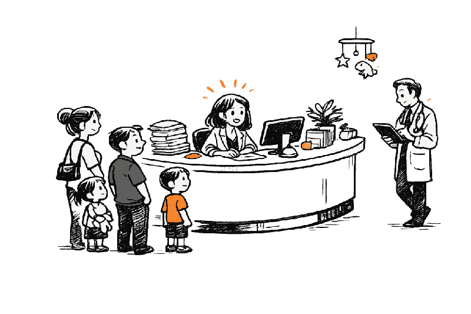

Eine Stunde weniger Sortierarbeit. Jeden Tag.
Wie die Kinderarztpraxis Kinderleicht Arztbriefe, Befunde und andere Dokumente schneller in die Patientenakte bringt.
Arztbriefe kommen per E-Mail. Laborberichte per Fax. Eltern bringen Befunde, Medikationspläne und Entlassungsbriefe mit.
In der Kinderarztpraxis Kinderleicht musste eine erfahrene Mitarbeiterin diese Unterlagen jeden Tag sichten, zuordnen und auf wichtige Informationen prüfen. Heute übernimmt Stapelweise einen großen Teil dieser Arbeit.
- Einrichtung
- Kinderarztpraxis Kinderleicht
- Aufgabe
- Tägliche Dokumentensichtung
- Dokumentarten
- Arztbriefe, Befunde, Laborberichte
- Ergebnis
- Rund 90 % weniger Aufwand
Der Tag ist schon voll. Der Dokumentenstapel wächst trotzdem.
Das Telefon klingelt. Im Wartezimmer sitzen Familien mit fiebernden Kindern. Akuttermine müssen dazwischengeschoben werden. Gleichzeitig kommen über verschiedene Wege neue Unterlagen in der Praxis an.
Jedes Dokument muss zur richtigen Patientenakte. Wichtige Werte und Angaben müssen übernommen werden. Dringende Befunde dürfen nicht im normalen Ablagestapel verschwinden.
Diese Arbeit bleibt häufig bis zum Ende eines ohnehin vollen Praxistages liegen.
Jeden Tag eine Stunde „aufräumen“
Carolin Eschwege kümmerte sich in der Praxis Kinderleicht um die eingehenden Dokumente. Etwa eine Stunde am Tag prüfte sie:
- Zu welcher Patientin oder welchem Patienten gehört die Unterlage?
- Müssen die Ärztinnen und Ärzte sie sofort sehen?
- Welche Angaben müssen in die Patientenakte übernommen werden?
- Kann das Dokument direkt abgelegt werden?
- Fehlt ein Anhang oder eine wichtige Seite?
Dafür brauchte sie Erfahrung, Konzentration und einen guten Blick für ungewöhnliche Fälle. Gleichzeitig fehlte diese Stunde an anderen Stellen in der Praxis.
Auch während der Behandlung musste weitergesucht werden
Nicht jede relevante Information war bereits vorbereitet, wenn das nächste Patientengespräch begann.
Die Ärztinnen und Ärzte öffneten neue Arztbriefe, überflogen Befunde und suchten nach Laborwerten, Diagnosen oder Therapiehinweisen. Häufig geschah das zwischen zwei Terminen oder direkt während des Gesprächs.
Dabei blieb die Sorge, einen wichtigen Satz oder einen Anhang zu übersehen.

„Das, was Carolin macht, basiert auf vielen Jahren Erfahrung. Das wollte ich auch nicht in Abrede stellen. Es war ein bisschen Überzeugungsarbeit nötig. Wenn wir Stapelweise einsetzen, kann Carolin ihre Stärken einfach besser an anderer Stelle einsetzen.“
Dr. Sebastian Bartels, Praxisinhaber Kinderleicht
Praxisinhaber Dr. Sebastian Bartels entschied sich, Stapelweise zu testen. Im Team gab es zunächst Vorbehalte. Die Skepsis war nachvollziehbar: Die tägliche Dokumentensichtung bestand schließlich aus vielen kleinen Entscheidungen.
Der Test zeigte jedoch: Stapelweise konnte einen großen Teil der vorbereitenden Arbeit übernehmen. Carolins Erfahrung blieb weiterhin entscheidend für den abschließenden Qualitätscheck.
Was Stapelweise übernimmt
Dokumente erkennen
Stapelweise verarbeitet eingehende Arztbriefe, Befunde, Laborberichte, Überweisungen, Medikationspläne und weitere medizinische Unterlagen.
Der Patientenakte zuordnen
Die Dokumente werden der richtigen Patientin oder dem richtigen Patienten zugeordnet.
Wichtige Angaben auslesen
Relevante Daten werden aus dem Dokument erfasst und für die Übernahme in die Patientenakte vorbereitet.
Auffällige Unterlagen markieren
Dokumente, die zeitnahe ärztliche Aufmerksamkeit benötigen, werden entsprechend gekennzeichnet.
Das Praxisteam prüft
Carolin kontrolliert die Ergebnisse und übernimmt Fälle, bei denen Erfahrung oder eine individuelle Entscheidung gefragt sind.
Aus einer Stunde wurde ein kurzer Qualitätscheck
Stapelweise reduzierte Carolins Aufwand bei der Dokumentensichtung um rund 90 Prozent. Sie wird weiterhin gebraucht. Ihre Zeit steckt heute nur deutlich seltener im Sortieren, Zuordnen und Übertragen von Informationen.
Die Ärztinnen und Ärzte erhalten relevante Unterlagen schneller vorbereitet. Das Praxisteam hat mehr Zeit für Aufgaben, bei denen Menschen tatsächlich gebraucht werden.

Was sich im Praxisalltag verändert hat
Weniger Sortierarbeit
Dokumente müssen nicht mehr einzeln von Grund auf gesichtet und zugeordnet werden.
Weniger Unterlagen zwischen Tür und Angel
Wichtige Informationen stehen früher und übersichtlicher zur Verfügung.
Weniger Arbeit am Tagesende
Ein Teil der wiederkehrenden Dokumentenarbeit ist bereits erledigt, bevor daraus ein Abendstapel wird.
Mehr Zeit für das Praxisteam
Erfahrene Mitarbeiterinnen und Mitarbeiter können sich stärker um Patientinnen, Patienten und den laufenden Praxisbetrieb kümmern.
Die Kontrolle bleibt in der Praxis
Stapelweise bereitet die Dokumentenarbeit vor. Die endgültige Prüfung bleibt beim Praxisteam.
Besondere Fälle können weiterhin individuell beurteilt werden. Unterlagen mit dringendem Handlungsbedarf werden sichtbar gemacht. Die Erfahrung der Mitarbeiterinnen und Mitarbeiter bleibt damit Teil des Prozesses.
Das System nimmt Fleißarbeit ab, ohne wichtige Entscheidungen aus der Praxis zu verlagern.
Wie viel Zeit steckt bei Ihnen im Dokumentenstapel?
Vielleicht sind es 30 Minuten am Tag. Vielleicht eine Stunde. Vielleicht verteilt sich die Arbeit auf mehrere Personen und fällt deshalb kaum als eigener Zeitblock auf.
Über eine Woche und ein Jahr entsteht daraus trotzdem ein erheblicher Aufwand.
Testen Sie Stapelweise mit typischen Dokumenten aus Ihrer Praxis. So sehen Sie direkt, welche Unterlagen automatisch erkannt, zugeordnet und ausgelesen werden können.
Stapelweise an konkreten Beispielen erleben und testen
Was kann Stapelweise für Sie tun? Vereinbaren Sie ein persönliches Gespräch mit uns.
Häufige Fragen aus Arztpraxen
Welche Dokumente kann Stapelweise verarbeiten?
Zum Beispiel Arztbriefe, Befunde, Laborberichte, Entlassungsbriefe, Überweisungen, Medikationspläne und weitere medizinische Unterlagen.
Ersetzt Stapelweise die Prüfung durch das Praxisteam?
Nein. Das System übernimmt vorbereitende und wiederkehrende Arbeitsschritte. Das Praxisteam führt den abschließenden Qualitätscheck durch und entscheidet bei besonderen Fällen.
Was passiert mit dringenden Informationen?
Dokumente, die zeitnahe ärztliche Aufmerksamkeit benötigen, können entsprechend markiert werden.
Spart jede Praxis 90 Prozent des Aufwands?
Die rund 90 Prozent beziehen sich auf den konkreten Arbeitsschritt in der Kinderarztpraxis Kinderleicht. Die mögliche Zeitersparnis hängt von Dokumentenmenge, Abläufen und Dokumenttypen der jeweiligen Praxis ab.